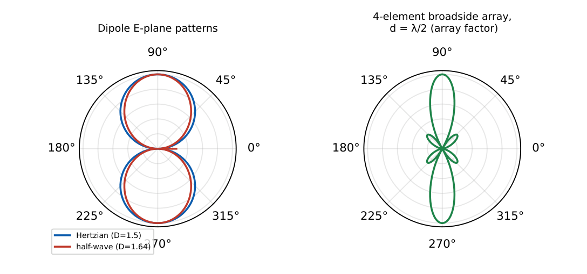

Antennas and Radiation
In this chapter
Hertzian and half-wave dipole parameters, directivity versus gain, radiation resistance, effective aperture and the Friis equation, monopoles over ground and uniform linear arrays (array factor, broadside and endfire).
9.1 Radiation fundamentals
A time-varying current radiates. Close to the antenna the fields are reactive (near field, \(1/r^2,1/r^3\)); far away (far field, \(r\gg\lambda\), \(r\gg D^2/\lambda\) for large apertures) the fields are a TEM wave: \(\vE\) and \(\vH\) transverse, in phase, with \(E/H=\eta_0\) and amplitude falling as \(1/r\). Power density \(S=\frac{E^2}{2\eta_0}\propto1/r^2\).
9.2 Hertzian (short) dipole
A current element \(I\,dl\) with \(dl\ll\lambda\) and uniform current.
\(E_\theta=j\dfrac{\eta_0\,I\,dl\,\beta\sin\theta}{4\pi r}e^{-j\beta r}\), \(\ H_\phi=E_\theta/\eta_0\). Pattern \(\propto\sin\theta\) (power \(\propto\sin^2\theta\)): doughnut, null along the axis, omnidirectional in the \(H\)-plane (\(\phi\)).
Total radiated power \(P_{rad}=40\pi^2I^2(dl/\lambda)^2\) (peak \(I\)) \(=\tfrac12I^2R_{rad}\), so
\[
R_{rad}=80\pi^2\left(\frac{dl}{\lambda}\right)^2\ \Omega.
\]
Directivity \(D=1.5\) (1.76 dBi); half-power beamwidth (HPBW) \(90^\circ\). A short dipole of finite length \(l\) with triangular current: \(R_{rad}=20\pi^2(l/\lambda)^2\).
9.3 Radiation pattern, directivity and gain
Radiation intensity \(U(\theta,\phi)=r^2S\) (W/sr); \(P_{rad}=\oiint U\,d\Omega\). Directivity \(D(\theta,\phi)=\dfrac{4\pi U}{P_{rad}}=\dfrac{U}{U_{avg}}\); \(D_{max}\) at the beam peak; isotropic \(D=1\) (0 dBi).
Gain \(G=e_{rad}D\), \(\ e_{rad}=\dfrac{R_{rad}}{R_{rad}+R_{loss}}\). Beam approximation: \(D\approx\dfrac{41253}{\theta_E\theta_H}\) (beamwidths in degrees) \(\approx\dfrac{4\pi}{\theta_E\theta_H}\) (radians).
Main lobe, side lobes, nulls, HPBW (between \(-3\) dB points), front-to-back ratio. Decibels: \(G_{dB}=10\log G\) (\(G=100\leftrightarrow20\) dB).

9.4 Dipole and monopole antennas
Half-wave dipole (\(l=\lambda/2\), sinusoidal current): \(E_\theta=j\dfrac{60I}{r}\dfrac{\cos(\frac\pi2\cos\theta)}{\sin\theta}\); \(R_{rad}=73\,\Omega\) (input impedance \(73+j42.5\,\Omega\), resonant at slightly shorter length); \(D=1.64\) (2.15 dBi); HPBW \(=78^\circ\); \(P_{rad}=\frac12I^2\cdot73\).
Quarter-wave monopole over a perfect ground plane: image theory gives the dipole pattern in the upper half space, \(R_{rad}=36.5\,\Omega\), \(D=3.28\) (5.15 dBi, twice the dipole because the same power goes into half the space).
Full-wave dipole: \(D\approx2.4\). Folded dipole: input impedance \(\approx4\times73=292\,\Omega\).
9.5 Effective aperture, Friis equation
Effective aperture \(A_e=\dfrac{\lambda^2}{4\pi}G\) (for \(D\) with no loss: \(A_e=\frac{\lambda^2}{4\pi}D\)); \(P_r=S\,A_e\) for a matched, polarization-matched receiver. \(A_e=\eta_{ap}A_{phys}\) for aperture antennas.
Friis: \(P_r=P_tG_tG_r\left(\dfrac{\lambda}{4\pi R}\right)^2\). Free-space path loss \(L_{fs}=\left(\frac{4\pi R}{\lambda}\right)^2\); in dB: \(32.45+20\log f_{MHz}+20\log d_{km}\). EIRP \(=P_tG_t\).
\(P_t=10\,\)W, \(G_t=G_r=10\), \(f=3\,\)GHz (\(\lambda=0.1\,\)m), \(R=1\,\)km: \(P_r=10\cdot10\cdot10\left(\frac{0.1}{4\pi\cdot1000}\right)^2=6.3\times10^{-8}\) W. A \(30\) dB antenna at \(\lambda=0.3\,\)m: \(A_e=\frac{0.09\times1000}{4\pi}=7.16\,\mathrm{m^2}\). Path loss at \(1\,\)GHz, \(10\,\)km: \(32.45+60+20=112.5\) dB.
9.6 Polarization of antennas
The polarization of an antenna is that of its radiated wave in the direction considered (linear, circular, elliptical). Receive power is reduced by the polarization loss factor \(\mathrm{PLF}=\cos^2\psi\) between wave and receiver polarizations (\(\psi\) is the mismatch angle). Crossed linear polarizations: \(\mathrm{PLF}=0\). A circularly polarized wave into a linear antenna: \(\mathrm{PLF}=0.5\) (\(3\) dB loss). Opposite-sense circular polarizations do not couple.
9.7 Linear antenna arrays
\(N\) identical isotropic elements along an axis, spacing \(d\), progressive phase \(\delta\): array factor with \(\psi=\beta d\cos\theta+\delta\),
\(\mathrm{AF}=\dfrac{\sin(N\psi/2)}{\sin(\psi/2)}\) (maximum \(N\) at \(\psi=0\); normalised \(\mathrm{AF}/N\)). Pattern multiplication: total pattern \(=\) element pattern \(\times\) AF.
Broadside (\(\delta=0\)): main beam at \(\theta=90^\circ\) (normal to the axis). Endfire (\(\delta=-\beta d\)): beam along the axis. For the main beam at angle \(\theta_0\): \(\delta=-\beta d\cos\theta_0\).
Nulls: \(N\psi/2=\pm k\pi\), \(k=1,2,\dots\) (not a multiple of \(N\) of \(\pi\)). To avoid grating lobes \(d<\lambda\) (broadside) or \(d<\lambda/2\) (scanned). Directivity of a broadside array with \(d=\lambda/2\): \(D\approx N\); HPBW \(\approx0.886\lambda/(Nd)\) rad.
Binomial arrays have no side lobes; Dolph–Chebyshev arrays give the narrowest beam for a given side-lobe level.
Two elements with \(d=\lambda/2\), \(\delta=0\): \(\mathrm{AF}=2\cos(\frac{\pi}2\cos\theta)\), maximum broadside, nulls along the axis.
(i) Directivity ignores losses; gain includes the radiation efficiency. (ii) \(R_{rad}\) is defined by \(P_{rad}=\frac12I^2R_{rad}\) with peak current. (iii) A monopole has twice the directivity of its dipole but half the \(R_{rad}\) (\(36.5\) vs \(73\,\Omega\)). (iv) \(A_e\) is not the physical area. (v) Friis needs consistent linear (not dB) quantities and \(\lambda\), not \(f\).
Convert gain in dB to a ratio first (\(10\) dB \(=10\), \(20\) dB \(=100\), \(3\) dB \(\approx2\)). \(D_{dipole}=1.64\), \(D_{short}=1.5\). For arrays find where \(\psi=0\) to locate the beam and \(N\psi/2=\pi\) for the first null. For Friis in dB: \(P_r=P_t+G_t+G_r-L_{fs}\).
9.8 GATE problems
Q1. The maximum directivity of a Hertzian dipole is (A) 1 (B) 1.5 (C) 1.64 (D) 3.
Q2. The radiation resistance of a half-wave dipole is about (A) 36.5 \(\Omega\) (B) 50 \(\Omega\) (C) 73 \(\Omega\) (D) 377 \(\Omega\).
Q3. An isotropic radiator has directivity (A) 0 (B) 1 (C) 1.5 (D) 4\(\pi\).
Q4. The effective aperture of an antenna of gain \(G\) is (A) \(\lambda G/4\pi\) (B) \(\lambda^2G/4\pi\) (C) \(\lambda^2G/\pi\) (D) \(4\pi G/\lambda^2\).
Answers: Q1 (B). Q2 (C). Q3 (B). Q4 (B).
Q5. \(P_t=10\,\)W, \(G_t=G_r=10\), \(\lambda=0.1\,\)m, \(R=1\,\)km. The received power is closest to (A) \(6.3\) nW (B) \(63\) nW (C) \(0.63\,\mu\)W (D) \(6.3\,\mu\)W.
Q6. A half-wave dipole carries a peak current of \(1\,\)A. The radiated power is (A) 73 W (B) 36.5 W (C) 18.25 W (D) 146 W.
Q7. An antenna has gain \(100\). Its gain in dB is (A) 10 (B) 20 (C) 100 (D) 40.
Answers: Q5 (B): \(6.33\times10^{-8}\) W \(=63\) nW. Q6 (B). Q7 (B).
Q8. \(R_{rad}\) (\(\Omega\), two decimals) of a Hertzian dipole with \(dl=\lambda/10\): .
Q9. \(A_e\) (\(\mathrm{m^2}\), two decimals) of a \(30\) dB antenna at \(\lambda=0.3\,\)m: .
Q10. Approximate directivity of an antenna with \(10^\circ\times10^\circ\) beamwidths (\(41253/\theta_E\theta_H\)): .
Answers: Q8: \(80\pi^2(0.01)=7.90\). Q9: \(7.16\). Q10: \(412.5\).
Q11. Half-wave dipole: (A) pattern is omnidirectional in the plane perpendicular to the axis (B) has nulls along the axis (C) \(D=1.64\) (D) radiates maximum along its axis.
Answers: Q11: (A), (B), (C).
T1. \(R_{rad}\) of a \(\lambda/4\) monopole over ground? T2. Friis equation? T3. Condition for endfire in a linear array?
Answers: T1: \(36.5\,\Omega\). T2: \(P_r=P_tG_tG_r(\lambda/4\pi R)^2\). T3: \(\delta=-\beta d\).
- Hertzian: \(D=1.5\), \(R_{rad}=80\pi^2(dl/\lambda)^2\), pattern \(\sin\theta\).
- Half-wave dipole: \(R_{rad}=73\,\Omega\), \(D=1.64\), HPBW \(78^\circ\); monopole \(36.5\,\Omega\), \(D=3.28\).
- \(D=4\pi U/P_{rad}\), \(G=e_{rad}D\), \(A_e=\lambda^2G/4\pi\), \(D\approx41253/\theta_E\theta_H\).
- Friis \(P_r=P_tG_tG_r(\lambda/4\pi R)^2\); \(L_{fs}\) in dB \(=32.45+20\log f_{MHz}+20\log d_{km}\).
- Array: \(\mathrm{AF}=\frac{\sin(N\psi/2)}{\sin(\psi/2)}\), \(\psi=\beta d\cos\theta+\delta\); broadside \(\delta=0\); endfire \(\delta=-\beta d\).